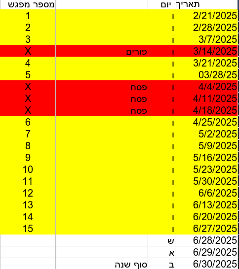
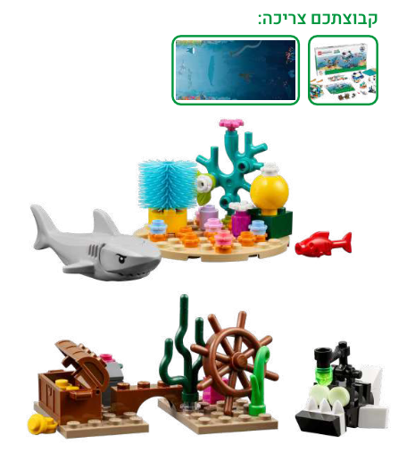
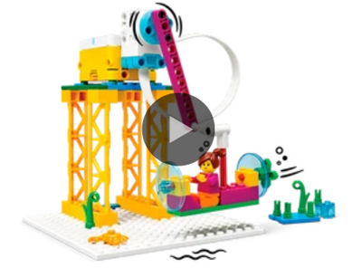
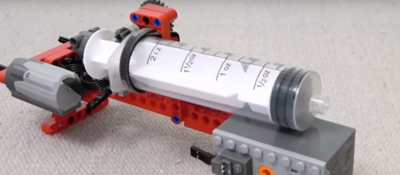
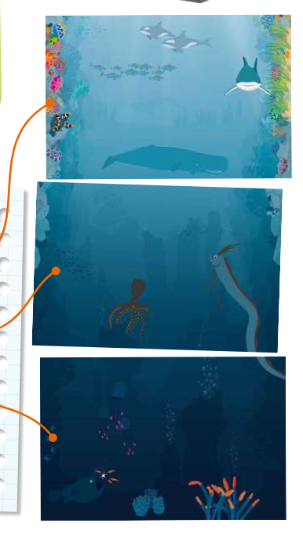

2024B#
dates#

lessons#
aid resources#
Session1 - motivation and welcome#
motivation ; lessons01 on drive;
Session2 - intro#
basic driving build artic slide
advanced ? under see arms | motor arms
Session3 - Oceans#
ocean depth https://www.youtube.com/watch?v=A_h_atP6jBs
80% of oceans are unexplored
{kind=link}
what part of the oceans you and your teammates would want to explore?
What is a submarine used for?
What can a submarine do that a diver cannot do?
What kinds of animals would you want to discover in the ocean?
🔨🔨🔨 build year’s submarine model - sub build1 // spike inst.
🔨🔨🔨 Build the coral reef and shark models

Session4 - sea vehicles#
🔨🔨🔨 spike lesson underwater-quest // spike inst

Session5 - pressure#
pressure

Session6 - Ocean Layers#
Ocean Layers

האזור המואר
אזור הדמדומים
אזור המעמקים
living things are found in the sunlight zone of the ocean
How do we explore each zone?
what do you think lives in the deepest parts of the ocean?
What is different about animals that live in darker parts of the ocean?
What is challenging about exploring the deepest parts of the ocean?
How do humans explore the ocean and what do they need to do it?
🔨🔨🔨 code the model to drive front and backward
modify the robot so it drives with four wheels
change the program so the LEGO model moves in a different way
modify your model so it represents a deep sea vehicle
Session7 - sensors#
explore the use of lights and sensors
What kinds of sensors would be useful on a submarine?
How are submarines used to explore the ocean?
🔨🔨🔨 model extend - color sensor
flash a light when a team member approaches the sensor
attach the sensor, motor, and hub to the submarine from Session 1
color detection:
When the sensor detects a black or gray object, the propeller spins quickly to back away.
When the sensor detects a blue or yellow object, the propeller spins slowly to move in and get a closer look
Session8 - arms#
submarine arms are used to collect samples from the ocean floor
what kind of arms are best for each task?
🔨🔨🔨 model extend add arms
Session10 - new creatures#
Research animals that have recently been discovered.
Imagine that your team discovers something strange while traveling through the ocean.
🔨🔨🔨 Use the prototyping pieces to build a mysterious and unknown creature.
what part of the ocean your creature is from and what protection it may need
How much space does your creature need?
Does your creature live in a cave or in open water?
Session11 - new habitat#
Artificial habitats are created by humans provide protection for fish and other small animals or protect a coast from erosion
🔨🔨🔨 build artificial habitat for the new species using the prototyping pieces
Can you draw the habitat you are going to build?
Session12 - Exploration Station#
prototyping pieces to build a place where people can study the ocean
Build the tools or equipment the people might need.
Does a marine biologist use different technology than a submarine pilot?
Session13 - final model#
build team model that shows your team’s ocean journey
requirements:
exploration station
an artificial habitat,
an ocean creature
Motorize any part of the team mode
Session14 - poster#
create your team poster use words, drawings, and photos on your poster